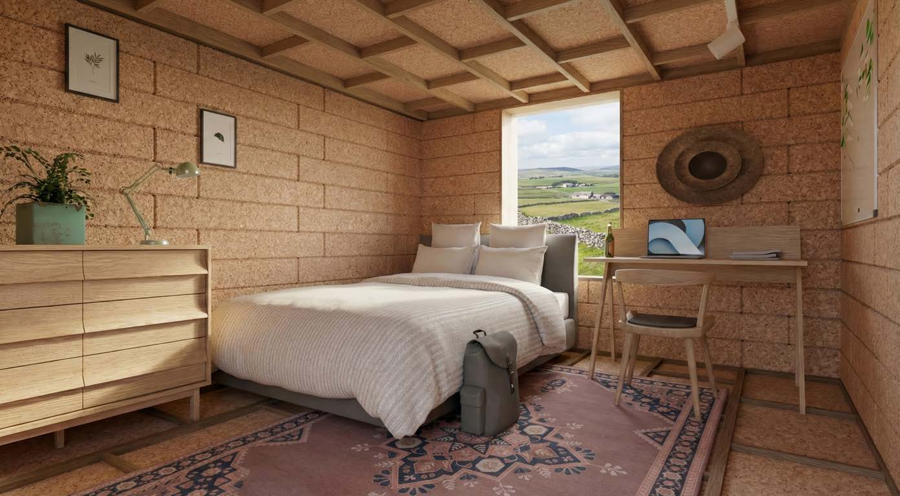
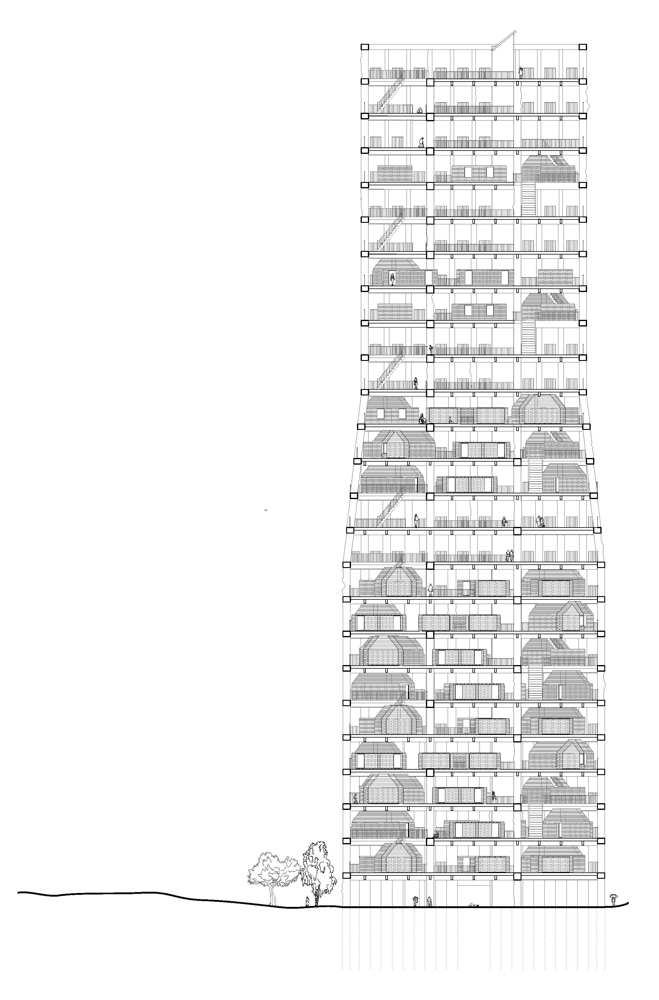
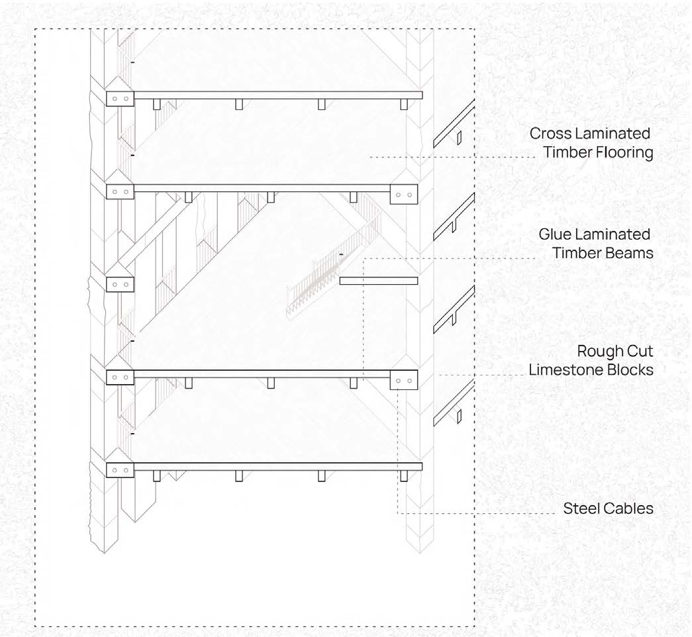
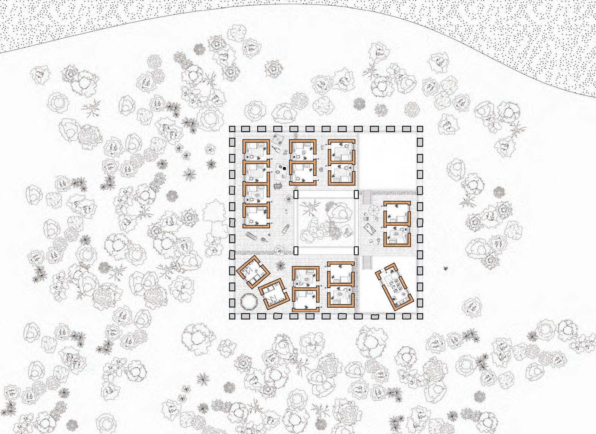

The project proposes a stone tower dwelling in a rural Irish landscape, developing a design response rooted in the material traditions of vernacular construction. The tower is conceived as a sequence of compressed and expanded spatial moments — a section driven by light, threshold, and the grain of the stone.
The design takes seriously the question of what a building is made from and how. Local stone is used structurally and expressively; the section resolves the contradictions of a building that must be both solid and inhabitable, heavy and precise.


